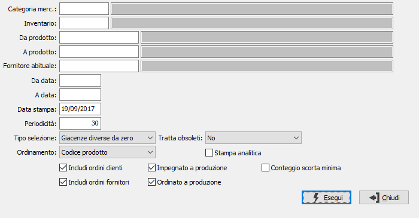

Raffronto ordinato/impegnato
Il programma produce una stampa di raffronto tra ordinato ed impegnato a quantità suddivisa per periodi.

CATEGORIA MERCEOLOGICA: codice della categoria merceologica per cui si vuole effettuare la selezione di analisi. Sul campo è attiva la ricerca (F9) sulla tabella Categorie merceologiche.
INVENTARIO: eventuale codice Inventario per cui si vuole effettuare l'analisi. Sul campo è attiva la ricerca (F9) sulla tabella Codici inventario.
DA PRODOTTO: eventuale codice dell'articolo, presente in anagrafica Prodotti, da cui si desidera iniziare la selezione dei movimenti di magazzino. Confermando a vuoto, la selezione inizia con il primo prodotto valido. Sul campo è attiva la ricerca (F9) sull’anagrafica prodotti.
A PRODOTTO: eventuale codice dell'articolo, presente in anagrafica Prodotti, a cui si desidera terminare la selezione dei movimenti di magazzino. Confermando a vuoto, la selezione termina con l’ultimo valido. Sul campo è attiva la ricerca (F9) sull’anagrafica prodotti.
FORNITORE ABITUALE: eventuale codice del fornitore abituale, riferito ai prodotti, per cui effettuare la selezione. Sul campo sono attive le funzioni di ricerca (F9).
DA DATA: eventuale data da cui deve iniziare l’analisi dei movimenti di magazzino per gli articoli precedentemente selezionati. Confermando a vuoto, l’analisi inizia con il primo movimento valido.
A DATA: eventuale data con cui si desidera terminare l’analisi dei movimenti di magazzino per gli articoli precedentemente selezionati. Confermando a vuoto, l’analisi si conclude con l'ultimo movimento valido.
DATA DI STAMPA: indicare la data in cui viene effettuata l'analisi, utilizzata come giorno di inizio per il conteggio delle date di stampa (viene proposta la data successiva a quella corrente, modificabile).
PERIODICITÀ:Indica il numero di giorni da considerare per generare le colonne dei risultati.
TIPO SELEZIONE: combo box per definire il tipo di esistenze da considerare. Valori ammessi:
Tutti
Giacenze diverse da zero
Giacenze negative
Sottoscorta con scorta diversa da zero
Sottoscorta tutti.
TIPO ORDINAMENTO: determina se ordinare la stampa per codice prodotto o descrizione prodotto.
TRATTA OBSOLETI: definisce come se includere nell'analisi anche gli articoli obsoleti: Si, No, Solo obsoleti.
INCLUDI ORDINI CLIENTI: indica se considerare gli ordini clienti (casella con segno di spunta).
INCLUDI ORDINI FORNITORI: indica se considerare gli ordini fornitori (casella con segno di spunta).
IMPEGNATO A PRODUZIONE: indica se considerare gli impegni derivanti dalla produzione (casella con segno di spunta).
ORDINATO A PRODUZIONE: indica se considerare gli ordini relativi alla produzione (casella con segno di spunta).
CONTEGGIO SCORTA MINIMA: definisce se considerare anche l'impegno dell'eventuale scorta minima presente per il prodotto, togliendola dalla giacenza iniziale (casella con segno di spunta), oppure non considerare la scorta minima del prodotto (casella vuota).